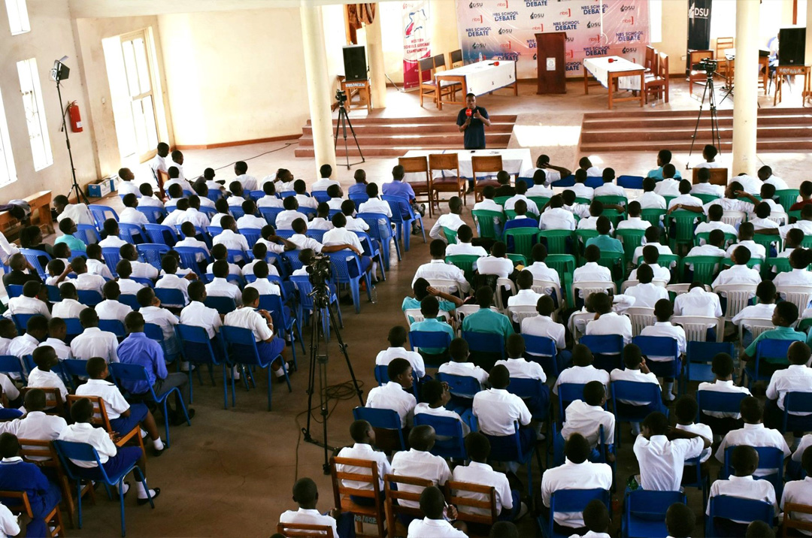

REDEEMER - DEBATE CLUB

The Debate Club at Redeemer High School is an exciting and engaging extracurricular activity that provides our students with a platform to develop their critical thinking, public speaking, and persuasive communication skills. It also provides them with the opportunity to engage in important conversations about current events and social issues and to participate in inter-school debate competitions and tournaments. We are proud of our Debate Club and the opportunities it provides for our students to develop their skills and reach their full potential. At Redeemer High School, we believe that the Debate Club is a valuable extracurricular activity that not only enhances our students' academic and personal development but also fosters a sense of community and camaraderie among our students. Additionally, the Debate Club provides students with the opportunity to participate in inter-school debate competitions and tournaments, both locally and nationally. This not only allows our students to showcase their debating skills but also provides them with the opportunity to meet and interact with students from other schools and communities.
.jpg)
.jpg)
Redeemer Receives the 2022 Award for the National Debate Championship
The Debate Club provides a supportive and inclusive environment for students to learn and develop their debating skills. Our experienced and qualified teachers guide students through various debate formats, including parliamentary, Lincoln-Douglas, and policy debates. Participation in the Debate Club also provides students with the opportunity to engage in important conversations about current events and social issues. This helps them to develop a deeper understanding of the world around them and to become informed and engaged citizens.
.jpg)
The Debate Club at Redeemer High School is an engaging and exciting extracurricular activity that provides our students with a platform to develop their critical thinking, public speaking, and persuasive communication skills. At Redeemer High School, we believe that debate is an essential skill that not only prepares our students for academic success but also equips them with the necessary tools to become effective communicators and leaders in their future careers.
REDEEMER - SCOUTS CLUB
♣
The Scouts Club at Redeemer High School is a vibrant and active extracurricular activity that provides our students with a unique opportunity to develop leadership skills, outdoor skills, and community service experiences.
♣
The Scouts Club is a global youth movement that emphasizes outdoor adventures, environmental conservation, and community service. At Redeemer High School, we have a strong tradition of scouting and we are committed to providing our students with the opportunity to participate in this enriching program.
♣
Through participation in the Scouts Club, our students learn essential skills such as camping, hiking, first aid, and survival techniques. They also learn the importance of teamwork, responsibility, and leadership as they work together to plan and execute outdoor activities and community service projects.
The Scouts Club at Redeemer High School is an enriching and dynamic extracurricular activity that provides our students with the opportunity to develop essential outdoor, leadership, and community service skills. It also allows them to participate in local and international scouting events, fostering a sense of global awareness and cultural appreciation. We are proud of our Scouts Club and the opportunities it provides for our students to develop into responsible and engaged citizens.
Moreover, the Scouts Club provides students with the opportunity to engage in a range of community service projects. From volunteering at local food banks and animal shelters to participating in environmental conservation initiatives, our students develop a strong sense of civic responsibility and become active members of their community. Participation in the Scouts Club also provides students with the opportunity to attend local and international scouting events, such as jamborees and leadership training camps. This not only allows our students to meet and interact with other scouts from around the world but also helps them to develop a global perspective and appreciation for cultural diversity. At Redeemer High School, we believe that the Scouts Club is a valuable extracurricular activity that not only enhances our students' personal and leadership development but also instills in them a sense of responsibility and commitment to their community and the world around them.
REDEEMER - WRITERS CLUB
The Writers Club at Redeemer High School is a fantastic extracurricular activity that provides students with the opportunity to develop their creative writing skills, express themselves in writing, and explore new literary forms. At the Writers Club, students learn about different literary genres and styles, explore creative writing techniques, and engage in writing exercises and workshops to develop their writing skills. Our experienced writing instructors guide and support the students to become better writers by providing feedback, encouragement, and guidance to improve their work.
The Writers Club also provides students with opportunities to participate in writing competitions, attend writing seminars, and publish their work in the school's literary magazine. This allows them to showcase their skills and gain recognition for their writing achievements. Furthermore, the Writers Club helps students to develop confidence, communication skills, and creativity as they explore new ideas and perspectives through writing.

The Writers Club also helps students to develop their critical thinking and analysis skills as they read and analyze literature and other written works. They gain a deeper understanding of literary techniques, writing styles, and the creative process, which can help them to become better writers and communicators. Overall, the Writers Club at Redeemer High School is an excellent opportunity for students to develop their creative writing skills, express themselves through writing, and explore new literary forms.
REDEEMER - SCRIPTURE UNION
The Scripture Union Club at Redeemer High School is a vibrant community of students who are passionate about exploring and deepening their faith through Bible study, prayer, and fellowship. At the Scripture Union Club, students engage in a variety of activities that help them to grow spiritually and connect with other believers. These activities include weekly Bible studies, prayer meetings, worship sessions, and outreach programs. Through Bible study, students learn to deepen their understanding of the Word of God and apply its teachings to their daily lives. They gain insights into biblical stories, characters, and themes, which help them to develop a strong foundation for their faith.
Prayer meetings provide students with the opportunity to come together and lift up their hearts and voices to God. They learn to pray for themselves, their families, friends, and the wider community. Through prayer, students learn to trust in God and experience his love and grace in their lives. Worship sessions at the Scripture Union Club provide students with a space to express their love and devotion to God through music, songs, and dance. They learn to appreciate the beauty of worship and the power of music in drawing people closer to God. Finally, outreach programs allow students to share their faith with others and make a positive impact in their community. They engage in activities such as volunteering, charity work, and evangelism, which help them to develop a sense of purpose and fulfilment.
In summary, the Scripture Union Club at Redeemer High School provides students with a supportive and welcoming community where they can deepen their faith, connect with other believers, and grow spiritually. Through Bible study, prayer, worship, and outreach programs, students develop a strong foundation for their faith, learn to trust in God, and make a positive impact in their community.
REDEEMER - MORE CLUBS